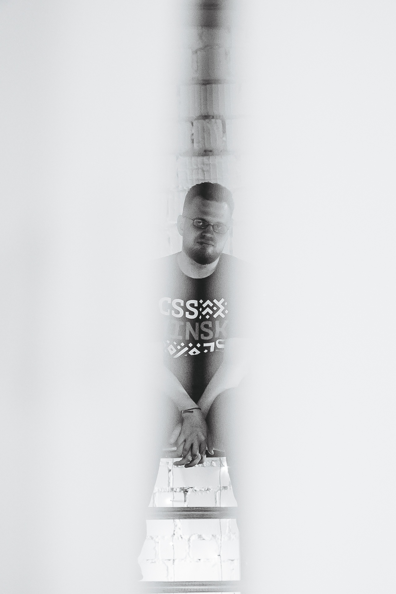
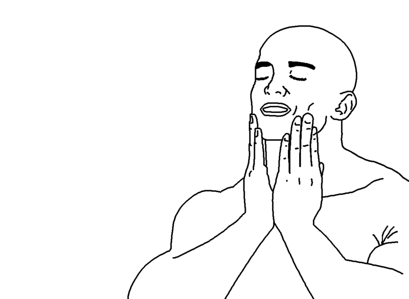
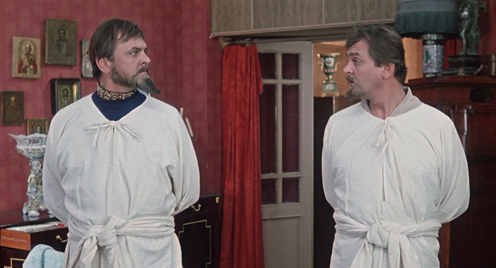
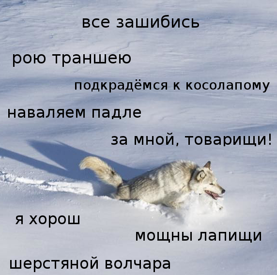
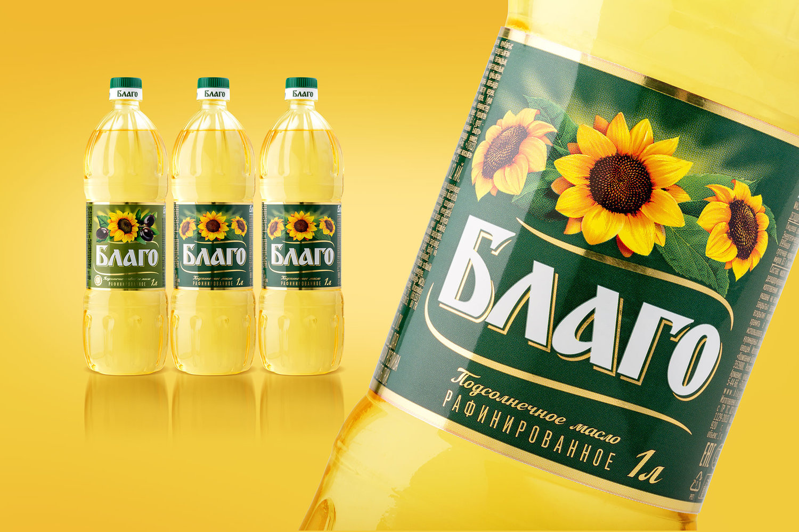

Кто я?
- доброжелюбный бородач
- разработчик интерфейсов в Яндексе
- организатор MinskCSS и MinskJS

ЧСВ, потому что могу!
- много раз попадал на главную страницу Codepen;
- был приглашён работать в Яндекс;
- попал в топ-1 докладов FrontendConf 2019;
- записывался в 3 популярных подкастах;
- около 20 докладов за год.

70%
☹︎☹︎☻☹︎☹︎☹︎☹︎☻☹︎☻
☻☹︎☹︎☹︎☻☹︎☹︎☹︎☹︎☻
☹︎☹︎☹︎☹︎☹︎☹︎☻☹︎☻☻
☹︎☻☹︎☹︎☹︎☹︎☻☻☹︎☹︎
☻☹︎☹︎☹︎☻☹︎☹︎☹︎☻☹︎
☹︎☹︎☻☹︎☹︎☻☻☹︎☹︎☹︎
You're Not Fooling Anyone
Корни из детства
- неадекватная оценка успехов;
- непростительность ошибок;
- низкая самооценка;
- травля в школе.
Порочный круг
я недостоин
нужно больше работать
усталость
больше ошибок
goto 01
Осознать

Фокус на процессе, а не на результате
Я сегодня молодец, потому что ________
Не идеально, а хорошо

Объективно
себя
оцените ⭐️

Используйте себе во благо
